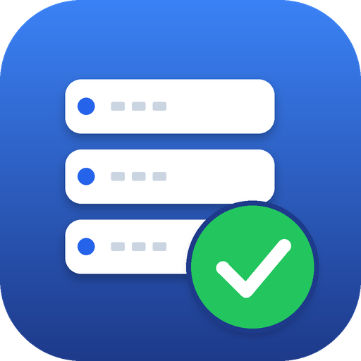

Komplett-Backups für Windows Server ab 2016: geplant, wiederkehrend und in einer einzigen Datei. Zum Zurückspielen startet man von einem Boot-Medium, das den Assistenten gleich mitbringt.
.wim-Datei. Der Server läuft weiter.Alle Laufwerke, das Datenträger-Layout und die Angaben zu Server und Startmodus stecken in einer Datei. Kopieren, archivieren, ablegen – mehr braucht es nicht.
Übersicht mit Status, nächstem Lauf und freiem Platz. Aufträge anlegen in einem Dialog statt in zehn Menüs. Läuft auch per PowerShell auf Server Core.
Ein gemeinsamer VSS-Snapshot aller Laufwerke, mit VSS-Writern. Nicht genügend Writer? Dann weicht das Programm auf absturzkonsistent aus und schreibt es ins Protokoll.
Ältere Sicherungen werden erst gelöscht, wenn die neue fertig und geprüft ist. Eine abgebrochene Sicherung hinterlässt keine halbe Datei.
Täglich, wöchentlich, monatlich, alle paar Stunden oder manuell. Verpasste Läufe werden nachgeholt. Optional E-Mail bei Fehlern.
WinPE mit einem Wiederherstellungs-Assistenten in vier Schritten. Findet Backups auf allen Laufwerken, verbindet Netzwerkfreigaben und warnt vor dem Löschen deutlich.
Partitionen, EFI-Systempartition bzw. Reserved-Partition, BCD und Laufwerksbuchstaben entstehen passend zum Zielserver. Zusätzliche Treiber lassen sich einbinden.
SMB-Freigaben mit Anmeldung; das Kennwort wird mit dem Server verschlüsselt gespeichert (DPAPI, Maschinenschlüssel).
Reines PowerShell und XAML, MIT-lizenziert. Bei jedem Commit läuft auf Windows ein Test mit echtem VSS-Backup und Restore auf einen leeren Datenträger.
# als Administrator im entpackten Ordner
powershell -ExecutionPolicy Bypass -File .\Install.ps1Danach im Startmenü WinServBackup öffnen. Für das Boot-Medium einmalig das kostenlose Windows ADK mit WinPE-Add-on installieren.
Probiere die Wiederherstellung einmal auf einer VM aus, bevor du dich darauf verlässt. Die Tests auf Windows decken Sicherung, Aufbewahrung, Zeitplan und das Zurückspielen auf einen leeren Datenträger samt Startdateien und Laufwerksbuchstaben ab. Einen vollständigen Start eines wiederhergestellten Servers und das Erzeugen des Boot-Mediums mit dem ADK prüfen sie nicht.
-ExecutionPolicy Bypass; den Quellcode kannst du vorher ansehen.